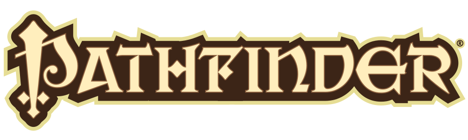
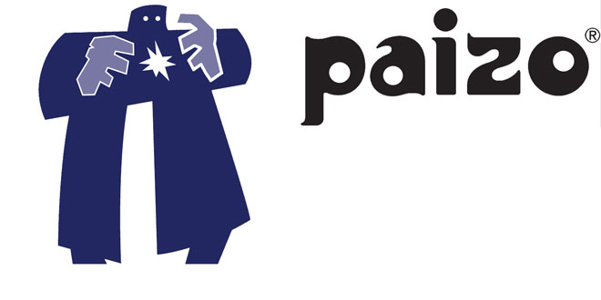

Pathfinder
O Pathfinder Roleplaying Game é um jogo de RPG de fantasia publicado em 2009 pela Paizo Publishing. Sua primeira edição estende e modifica o System Reference Document (SRD) derivado da edição revisada de Dungeons & Dragons (D&D 3.5), publicada pela Wizards of the Coast sob a Open Game License (OGL), e foi projetada para manter compatibilidade retroativa com essa edição.
Embora a Primeira Edição de Pathfinder seja ocasionalmente apelidada pela comunidade de “D&D 3.75” (ou “3.7”) devido às suas semelhanças mecânicas e ao seu caráter evolutivo em relação ao D&D 3.5, essa denominação é não oficial e expressa apenas uma percepção informal dos jogadores; o sistema é baseado exclusivamente em D&D 3.5, e não em qualquer edição intermediária ou derivada.

Histórico
A editora Paizo Publishing publicava as revistas Dragon e Dungeon, que eram sobre o jogo Dungeons & Dragons (D&D). A Paizo publicava sob licença da Wizards of the Coast, detentora dos direitos de Dungeons & Dragons. Nesse período, foi criado o mundo de Golarion. A Wizards of the Coast optou por não renovar o contrato no início de 2007, com isso, a Paizo começou a publicar a revista Pathfinder. Em agosto de 2007, a Wizards of the Coast anunciou o lançamento da quarta edição de Dungeons & Dragons, que substituiu a versão 3.5. Muitos dos funcionários da Paizo estavam preocupados com Game System License e o fato da nova licença, usada na quarta edição, ser mais restritiva que as anteriores. Em vez de continuar a publicar material para D&D, a Paizo lançou Pathfinder como uma versão modificada de D&D 3.5, sob Open Game License, lançada pela própria Wizards na terceira edição de Dungeons & Dragons (lançada em 2000). Anunciado em março de 2008, o Pathfinder RPG foi desenvolvido ao longo de um ano, usando um modelo de playtest aberto, onde os jogadores puderam experimentar o sistema e postar seus comentários no site da Paizo.

Um jogo de cartas colecionáveis, Pathfinder Adventure Card Game, baseado no sistema foi lançado em Gen Con 2013. Foi projetado por Mike Selinker da Lone Shark Games.
No Brasil
Em 2008, a revista Dragon Slayer #21 apresentou um artigo autorizado pela Paizo sobre classe feiticeiro traduzido por Leonel Caldela.
Em 2013, foi anunciado que a Devir Livraria, editora que publicava D&D no país desde 1999, lançaria Pathfinder no Brasil. Inicialmente, a editora anunciou o jogo de cartas colecionáveis com o título "Pathfinder: O Jogo de Aventuras", o jogo também foi prometido pela filial portuguesa, a editora não declarou se iria lançar também o RPG no país europeu. Em 2015, a editora publicou Pathfinder Roleplaying Game - Livro Básico. Em outubro de 2018, a Paizo anunciou que a licença de Pathfinder iria para a New Order Editora, no ano seguinte, a New Order lançou uma campanha de financiamento coletivo no Catarse para publicar a segunda edição de Pathfinder.